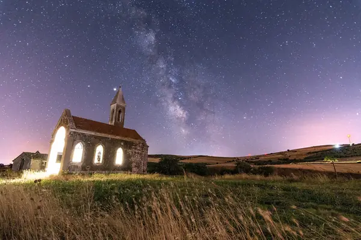

Aglianico grape

Photo: Gianpaolo Antonucci on Unsplash
Aglianico is a red grape known for black cherry, plum, smoke. Its best-known homes are Campania, Basilicata.
Primary flavours
- Black cherry
- Plum
- Smoke
- Black pepper
Taste profile
Origin and history
An ancient southern Italian variety; the long-told story of Greek origins is unproven, and the name is first recorded only in the 16th century.
Where it grows
Campania (Taurasi DOCG, Aglianico del Taburno, Irpinia), Basilicata (Aglianico del Vulture) and Puglia; small plantings in Australia and California.
Structure
Full body, deep colour, high acidity and very high, firm tannins; often called the 'Barolo of the South'.
Aromas, young and aged
Young: black cherry, plum, black pepper, smoke and violets. With age: leather, tar, tobacco, earth and dried cherry.
Ageing
Taurasi and Vulture Superiore need 5–10 years and can age 20–30.
Good to know
It is one of Italy's latest-ripening grapes, often picked in November on the volcanic slopes of Monte Vulture and in Irpinia.
Wine regions for Aglianico
Aglianico wines to try
Real bottles from The Wine Library.
Mastroberardino Taurasi Radici
Campania · Taurasi · Aglianico
Firm and dark: black cherry, smoke, leather and high acidity.
Food: Lamb, aged provolone
Di Majo Norante Contado Aglianico
Southern Aglianico: dark cherry, smoke and earthy spice with firm grip.
Food: Lamb chops, sausages, aged cheese
Elena Fucci Titolo
Basilicata · Aglianico del Vulture · Aglianico
Volcanic Aglianico: black cherry, plum, smoke and fine, firm tannins.
Food: Braised lamb, mushroom dishes, game
Feudi di San Gregorio Serpico
Campania · Irpinia · Aglianico
Old-vine Aglianico: dark fruit, smoke and firm tannins.
Food: Lamb, braised beef
Paternoster Don Anselmo Aglianico del Vulture
Basilicata · Aglianico del Vulture · Aglianico
Volcanic Aglianico: black cherry, earth and grip.
Food: Game, lamb
Cantine del Notaio La Firma
Basilicata · Aglianico del Vulture · Aglianico
Volcanic Aglianico with black cherry, liquorice and smoke, broad tannins and a long, savoury finish.
Food: Braised beef, lamb ragù with orecchiette
Appellations that use Aglianico
- Taurasi DOCG · Campania · Red
- Aglianico del Vulture Superiore DOCG · Basilicata · Red
- Aglianico del Taburno DOCG · Campania · Red, Rosé
- Castel San Lorenzo DOC · Campania · White, Red
- Cilento DOC · Campania · White, Red
- Costa d'Amalfi DOC · Campania · White, Red, Rosé
- Falerno del Massico DOC · Campania · White, Red
- Galluccio DOC · Campania · White, Red
- Irpinia DOC · Campania · White, Rosé, Red
- Sannio DOC · Campania · White, Red
- Vesuvio DOC · Campania · White, Red, Rosé, Sparkling, Fortified, Sweet
- Aglianico del Vulture DOC · Basilicata · Red, Sparkling
- Castel del Monte Rosso Riserva DOCG · Puglia · Red
- Castel del Monte DOC · Puglia · White, Red, Rosé, Sparkling
Similar red grapes
Explore all grapes in the interactive guide
The Wine Reference newsletter
New wines, stories and career guides, one email a week at most.
Over 18s only. Unsubscribe any time with one click. Your email is stored securely by Kit and never shared.
Support The Wine Reference
This guide is free, with no paywall. If it helped you choose a bottle, you can buy me a glass and keep it growing.
🍷 Buy me a glass